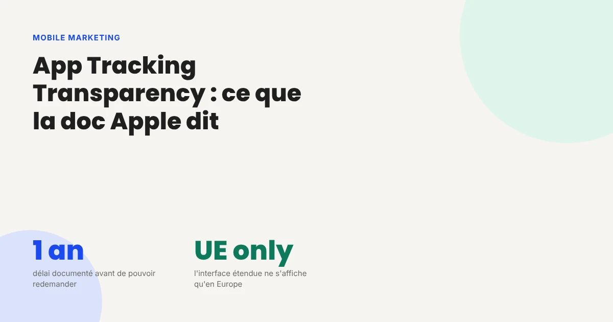

App Tracking Transparency : ce que la documentation Apple dit vraiment
Le pop-up ATT est devenu un repère familier pour quiconque a lancé une app iOS depuis 2021. Sa mécanique exacte — quand il s'affiche, quand il se mémorise, quand on peut redemander — reste pourtant souvent approximée. La documentation Apple, elle, est précise.

App Tracking Transparency (ATT) est le cadre de permission d'Apple qui demande à l'utilisateur d'autoriser ou de refuser le suivi de son activité à des fins publicitaires entre apps et sites tiers. La plupart des équipes mobile en connaissent l'existence et l'impact global sur le taux de disponibilité de l'IDFA. Beaucoup moins connaissent les règles précises qui déterminent quand le prompt s'affiche réellement, et quand il ne s'affiche pas — des règles qui sont pourtant documentées noir sur blanc par Apple.
Ce qui déclenche l'affichage, et ce qui l'empêche
La méthode requestTrackingAuthorization déclenche l'affichage du prompt système. Mais la documentation Apple précise une condition souvent ignorée : l'appel ne déclenche le prompt que lorsque l'app se trouve à l'état actif (UIApplicationStateActive). Si l'app est dans un autre état au moment de l'appel — par exemple en arrière-plan ou en transition —, le prompt n'apparaît pas. C'est une explication technique directe, documentée par Apple elle-même, à une partie des écarts que certaines équipes mobile constatent entre le nombre d'utilisateurs qui lancent l'app et le nombre de prompts réellement affichés.
Un choix mémorisé, pas redemandé à chaque lancement
Une fois la demande effectuée, le système mémorise le choix de l'utilisateur et ne le redemande pas à chaque lancement de l'app. La documentation Apple est explicite sur l'exception qui annule cette mémorisation : une désinstallation suivie d'une réinstallation de l'app sur l'appareil. En dehors de ce cas, le choix initial — accepté ou refusé — reste en vigueur indéfiniment du point de vue du système, ce qui signifie qu'il n'existe pas de mécanisme natif pour « rappeler » un utilisateur qui a refusé une seule fois, sauf à passer par la fenêtre de ré-autorisation décrite ci-dessous.
La fenêtre de ré-autorisation après un an
Apple documente une possibilité précise de refaire la demande : une nouvelle requête peut être présentée après un délai d'un an, que la personne ait accepté ou refusé la demande précédente. Cette règle a une exception explicite : elle ne s'applique pas si la personne a désactivé le tracking directement dans Réglages > Confidentialité et sécurité > Suivi, un réglage global qui prime sur le délai d'un an propre à chaque app. Pour une app qui a essuyé un refus initial, c'est la seule fenêtre documentée pour redemander — pas plus tôt, et seulement si l'utilisateur n'a pas désactivé le suivi au niveau du système.
L'interface étendue, et sa limite géographique
Apple a introduit une variante du prompt avec une interface étendue (usingExpandedInterface), qui permet d'ajouter des informations complémentaires avant la demande de permission standard. La documentation Apple précise une limite géographique nette : en dehors de l'Union européenne, le système ignore les paramètres de cette interface étendue et affiche directement l'alerte système standard, avec le seul texte défini dans la clé NSUserTrackingUsageDescription du fichier Info.plist. Une app qui a investi du temps à concevoir un écran d'explication étendu doit donc savoir que cet investissement ne produit un effet que pour les utilisateurs situés dans l'UE — ailleurs, seul le texte de la clé Info.plist compte.
Ce que ça change concrètement pour une stratégie ATT
Trois implications pratiques découlent directement de ces règles documentées. D'abord, vérifier que l'appel à requestTrackingAuthorization se produit bien pendant que l'app est active, pas pendant une transition d'état — un prompt qui ne s'affiche jamais à cause d'un mauvais timing d'appel peut ressembler à tort à un problème de conception. Ensuite, ne pas chercher de mécanisme pour redemander avant le délai d'un an : il n'existe pas, et tenter de le contourner (en poussant une mise à jour qui redéclenche artificiellement la demande, par exemple) sortirait du cadre documenté par Apple. Enfin, concentrer l'effort de rédaction sur le texte NSUserTrackingUsageDescription lui-même plutôt que sur un écran d'explication étendu, sauf si la base d'utilisateurs européenne justifie cet investissement supplémentaire.
FAQ
Le pop-up ATT peut-il être redemandé plusieurs fois à un même utilisateur ?
Selon la documentation Apple pour requestTrackingAuthorization, le système mémorise le choix de l'utilisateur et ne réaffiche pas le prompt, sauf si l'app est désinstallée puis réinstallée sur l'appareil. Apple précise par ailleurs qu'il est possible de faire une nouvelle demande après un délai d'un an, que la personne ait accepté ou refusé la demande précédente, sauf si elle a désactivé le tracking dans Réglages > Confidentialité et sécurité > Suivi.
Pourquoi le pop-up ATT ne s'affiche-t-il parfois pas du tout ?
La documentation Apple indique que l'appel ne déclenche le prompt que lorsque l'app est à l'état actif (UIApplicationStateActive). Si l'app se trouve dans un autre état au moment de l'appel, le prompt n'apparaît pas, ce qui explique une partie des cas où les équipes constatent un taux d'affichage inférieur à ce qu'elles attendaient.
L'interface étendue (expanded interface) du prompt ATT s'affiche-t-elle partout ?
Non. D'après la documentation Apple sur la variante usingExpandedInterface, en dehors de l'Union européenne, le système ignore les paramètres de l'interface étendue et affiche l'alerte système standard avec le texte défini dans NSUserTrackingUsageDescription.
Une stratégie de tracking mobile à auditer après iOS 14+ ?
Pour aller plus loin, voir la page Mobile Marketing, et l'article deep linking mobile : la configuration qui fausse votre attribution d'app.
Pour continuer sur ce sujet.